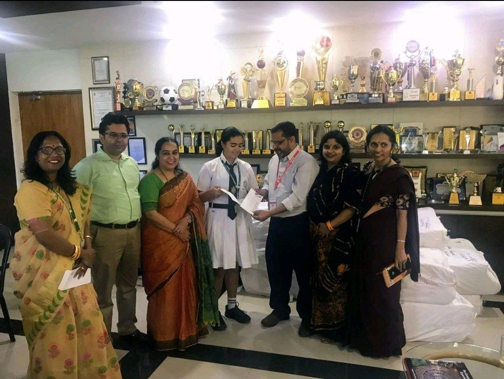
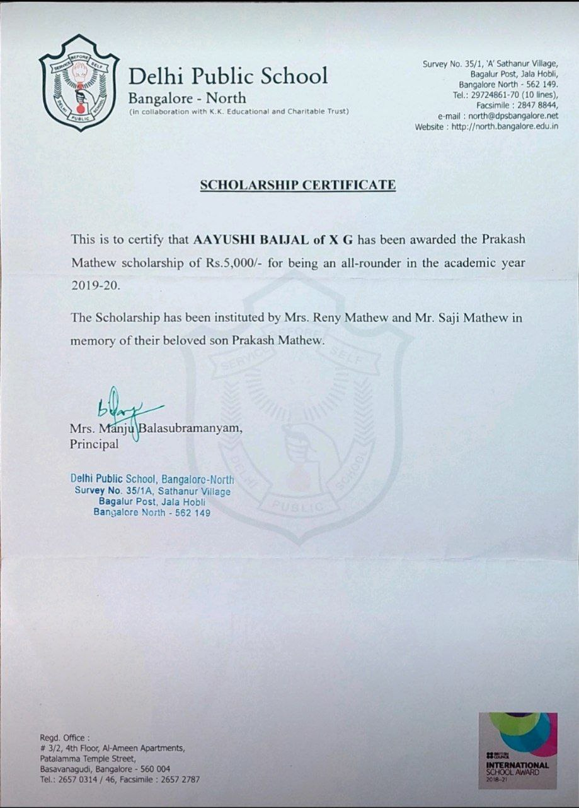

Scholarships
Prakash Mathew All-Rounder Scholarship Recipient | DPSBN
June 2019 - May 2020
🎗I find myself immersed in a profound sense of honor and achievement to have received the Prakash Mathew All-Rounder Scholarship during the 2019-20 academic year at Delhi Public School - India ,Bangalore North.
🏆 Receiving the scholarship would not have been possible without the guidance and encouragement provided by my teachers, mentors, and the school administration. Special thanks to Mrs. Manju Balasubramanyam for this incredible opportunity!
🎯 This award has reinforced the belief that a well-rounded education goes beyond just examinations, encompassing leadership and sportsmanship.I am grateful to have been featured in the school magazine, "Reminisce" for this accomplishment.

